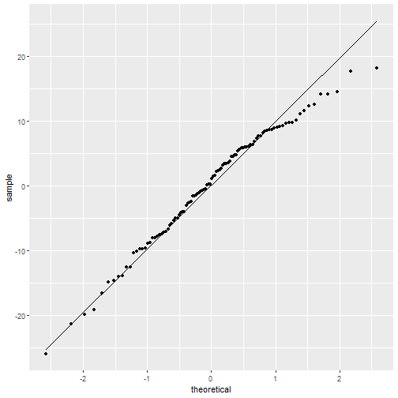

- The most straightforward method for identifying relationships among variables is graphically
- R has several plotting functions in its base code
- Quick to access, but hard to customize and not very visually appealing
ggplot2is an outside plotting package that is part of the tidyverse- Similar grammar and ideas to what we've seen with
dplyr
- Similar grammar and ideas to what we've seen with
- Great for publication-ready graphs
Week 4: Visualizing Our Data
02/04/2020
Jake Campbell
Identifying Relationships Graphically
The Grammar of Graphics
- Think of a graph as a sentence
- A sentence has several different aspects (noun, verb, adjective, etc.)
- A graph can be thought of as doing the same thing (data, geom, scale, etc.)
ggplotallows us to plot in this grammar of graphics style- Each part is connected by a
+ - Similar to how we connect each line of code in
dplyrwith a%>%
Data
- The first argument in our ggplot code signifies where the data is coming from
- Specific aesthetics about the data (i.e. how data is mapped)
- x and y values
- Colors, fills, shapes
Aesthetics
- If we want to map a variable to an aspect of our plot, we can include it in
aes()
# Map gender to color
ggplot(aes(x = height, y = weight, color = gender))
- If we just want to map a single characteristic, we should do it outside of the
aes()call and in the geom object
# Map the color blue to color
ggplot(aes(x = height, y = weight)) +
geom_point(color = "blue")
Geom Object
- How we choose to visually represent our data
- Anything from a scatter plot to a text label
- We can label plot attributes within a geom object
- i.e. color, transparency, size, etc.
- Geoms can easily be layered on top of each other
Scatter Plots
- We use
geom_point()to specify a scatter plot - Good for plotting a continuous variable against a continuous variable
ggplot(data = diamonds, aes(x = carat, y = price)) +
geom_point()
Scatter Plots

Histograms
- We use
geom_histogram()to create a histogram - Good for plotting the distribution of a variable
ggplot(data = diamonds, aes(x = price)) +
geom_histogram()
Histograms

Density Plots
- We use
geom_density()to create a density plot - Smoother representation of a distribution than a histogram
ggplot(data = diamonds, aes(x = price)) +
geom_density()
Density Plots

Bar Plots
- We use
geom_bar()to create a bar plot - Could use the
positionargument to change bar placements"dodge"creates side-by-side bars for groups"stack"creates a stacked bar chart for groups"fill"stacks the groups using ratios instead of counts
- Good for plotting the count of levels of a categorical variable
ggplot(data = diamonds, aes(x = cut)) +
geom_bar()
Bar Plots

Box Plots
- We can plot box plots with
geom_boxplot() - Good for plotting a continuous variable against a categorical variable
ggplot(data = diamonds, aes(x = cut, y = price)) +
geom_boxplot()
Box Plots

Faceting
- What if we want to look at the same x-y relationship for different groups or factor levels?
- ex: the relationship between pain measure and time after surgery by gender
- Faceting allows us to do this
facet_wrap()takes a look at our data by group
Scale Functions
- There are several scale functions that allow us to edit scales to either better represent our data, or customize our graph (notice functions I write here can be applied to the y axis by substituting x for y)
scale_x_discrete(): allows us to edit scale info on categorical datascale_x_continuous(): allows us to edit scale info on numeric data
scale_color_.: can be used to edit scale info for data that has been mapped to color- Note, you can specify discrete, continuous, or manual
- Also commonly applied to fill with
scale_fill_continuousorscale_fill_manual
Additional Components
- Graph labels can be edited using the
labs()argument- x, y, title, fill, color, etc.
theme()can be used to make changes to non-data aspects of the graph- Font type, color, legend position, etc.